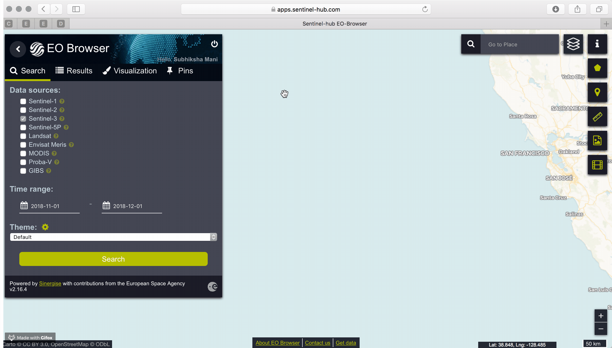

An Introduction
Ocean plastic pollution is a problem that’s hard to visualize. By the time plastic ends up in the middle of the ocean, most of it has been ground down into small, “microplastic”-sized parts and sits suspended below the water’s surface. Estimates of the total plastic product weight that has entered the ocean are in the range of millions of tons. But sample collections show only a small percentage of the probable total - and the marine trash problem is less visible and less understood than we know. For example, the 2010 Malaspina Expedition, a big ocean research project, found plastic over wide area, but overall far less than researchers thought they’d find. Possibilities include that the plastic is broken into pieces too small to be captured by nets, that it accumulates on coastlines, it sinks to the bottom, or that it is eaten by aquatic life, including plankton, one of the first links in our food chain. What is the impact? Our project hopes to provide more insight into this issue of ocean pollution by classifying and visualizing areas of pollution in the Pacific Ocean.
Step 1: EO Browser
In order to identify if a certain area has a trash, the adaptable user interface of SentinelHub's EO Browser allows us to identify regions of interest by longitude and latitude, such as the Great Pacific Garbage Collection Patch. We've provided a Jupyter Notebook of our explorations with the Sentinel Hub API for our project.
Step 2: Machine Learning Methods
We've provided two additional notebooks that take a deep dive (pun intended) into our data cleaning and EDA phase for two datasets, one focusing on the navigation of boats in the ocean and the other on the distribution of plastic. Based on these datasets and after identifying an area of interest (with longitude and latitude points), we can classify whether that area contains trash based on historical data.
Step 3: Next Steps
Working with ocean data proved very difficult, because techniques were quite limited on how to navigate ocean data, let alone find adequate data. We've just dipped our toes in the water (pun intended), but we hope that this user interface and our extensive exploration into ocean data (Jupyter notebooks provided!) provides a starting point to more machine learning methods and insights to gain from the mighty ocean!